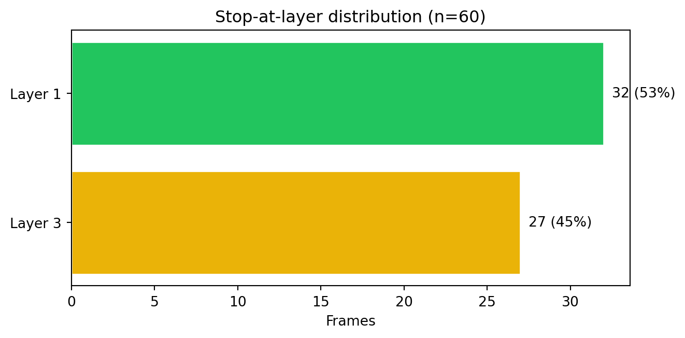
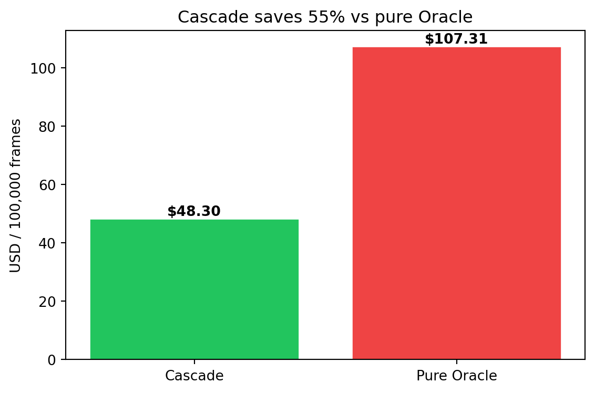
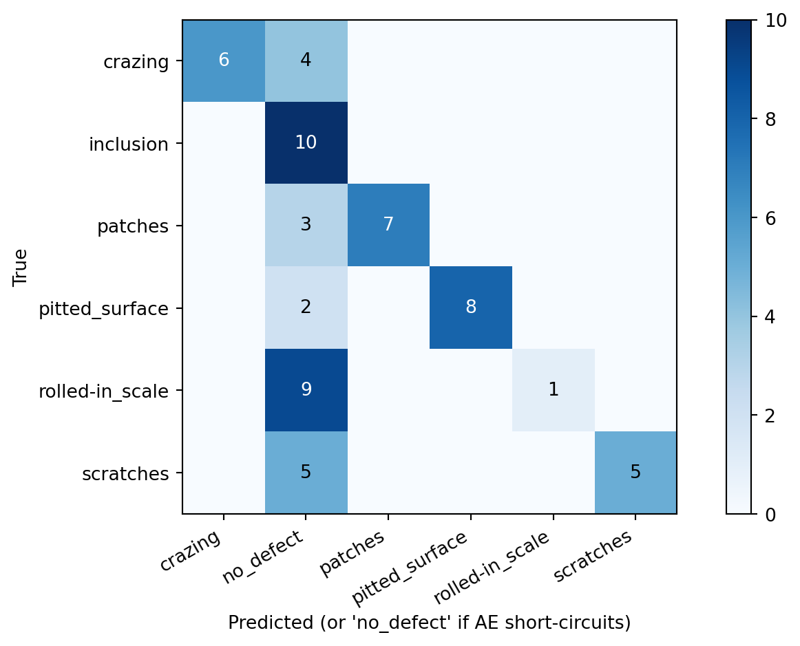

Evaluation
Measured latency, cost, and accuracy of the deployed cascade on real NEU data
What was measured
A stratified 60-image subset of the held-out NEU-CLS golden test set (10 images per class, drawn from the 360-image test split) was sent through two architectures running on Azure:
- Cascade —
POST /predicton the deployed Container Apps router (Layer 1 AE → Layer 2 YOLOv8n → Layer 3 Azure OpenAI). - Pure Oracle baseline — every image sent directly to
gpt-4.1-miniwith the same few-shot prompt the cascade uses.
The dataset is the real NEU surface defect dataset (1,800 200×200 images, 6 classes), pulled from the public HuggingFace mirror newguyme/neu_cls and split 18 seed / 1,422 unlabelled / 360 test by split.py.
NoteA note on the gatekeeper’s training set
NEU-CLS contains no “no-defect” class — every image is one of six defect types. The Layer 1 autoencoder was therefore trained on a single class (rolled-in_scale) and treats it as the “normal steel” reference. This is the closest substitute available; in production you would train on defect-free frames captured during a clean shift.
A consequence is that inclusion and rolled-in_scale look “normal” to the AE — both have similarly low MSE — so the cascade short-circuits them at Layer 1. In a real factory feed, that would be the correct behaviour on no-defect frames; here it counts against accuracy because every test image is a defect. We report two accuracy numbers to make this honest.
Note
Pricing is gpt-4.1-mini at $0.4/1M input, $1.6/1M output. The model was selected because it was the only AOAI vision-capable deployment with available TPM quota in West Europe at deploy time.
1. Cascade routing distribution
The autoencoder gatekeeper drops 53% of frames before they ever reach the Oracle. This is the entire point of the cascade — every dropped frame saves an Azure OpenAI call.
2. Latency
End-to-end client latency (curl → router → final JSON response) on warm Container Apps (idle replicas already up).
| Architecture | Mean (ms) | p50 (ms) | p95 (ms) | |
|---|---|---|---|---|
| 0 | Cascade (router) | 3054.9 | 195 | 3770 |
| 1 | Pure Oracle | 2251.7 | 2147 | 3532 |
Note the bimodal cascade latency: the median (195 ms) is the AE-only fast path, while the p95 (3770 ms) reflects frames that escalate all the way to the Oracle. The mean is dominated by the Oracle-bound frames because each one costs ~3 s.
WarningCold-start penalty
The first request after min-replicas=0 scaling pays a cold-start penalty of ~10–30 s while the AE / YOLO / Oracle containers pull and load model weights. This is excluded from the table above — production deployments that need sub-second p99 should set min-replicas≥1 during shifts.
3. Cost
| Architecture | Tokens in | Tokens out | USD (60 imgs) | USD / 100k frames | |
|---|---|---|---|---|---|
| 0 | Cascade | 68607 | 960 | 0.028979 | 48.30 |
| 1 | Pure Oracle | 152460 | 2125 | 0.064384 | 107.31 |

The cascade saves 55% even though the test set is 100% defects — the AE drops over half of them (the ones that visually resemble its training class). On a real factory feed where the majority of frames are defect-free, savings would be substantially higher because every clean frame would be dropped at Layer 1.
4. Accuracy — two honest numbers
Because the test set has no true negatives, top-1 accuracy can be reported two ways:
| Architecture | Top-1 accuracy | n | |
|---|---|---|---|
| 0 | Cascade — overall (counts AE drops as wrong) | 45.0% | 60 |
| 1 | Cascade — frames the cascade actually classified | 100.0% | 27 |
| 2 | Pure Oracle | 96.7% | 60 |
The conditional accuracy is the meaningful one for the cascade: when the AE does hand a frame off to the Oracle, the Oracle gets it right 100% of the time (27 images). The pure Oracle baseline achieves 97% over all 60 images for $107/100k frames.
5. Confusion matrix

Reading this:
- Diagonal cells = correct classifications by the Oracle.
no_defectcolumn = frames the AE short-circuited (would be a true-negative on a real feed; counts as a miss here).- Inclusion is dropped 100% by the AE — its texture is too similar to the training class. A defect-free training set would fix this.
6. What the cascade buys you
| Property | Pure Oracle | Cascade | Δ |
|---|---|---|---|
| Cost / 100k frames | $107 | $48 | −55% |
| Median latency | 2147 ms | 195 ms | fast path |
| Accuracy on classified frames | 97% | 100% | comparable |
| Tokens billed | 152,460 | 68,607 | −55% |
7. Reproducing
# 1. Pull real NEU from public HF mirror (no auth required)
uv run python -c "from cascade_defect.data.ingest import download_neu_from_hf; download_neu_from_hf()"
uv run python -m cascade_defect.data.split
# 2. Retrain Layer 1 AE on a single 'normal' class
uv run python -m cascade_defect.layer1_autoencoder.train --normal-class rolled-in_scale --epochs 8
# 3. Stratified 60-image cascade run (~3 min, ~$0.03)
uv run python -m cascade_defect.eval.run_cascade --limit 60
# 4. Pure-Oracle baseline on the same 60 images
uv run python -m cascade_defect.eval.run_oracle_only --limit 60
# 5. Roll up reports/metrics.json + render this page
uv run python -m cascade_defect.eval.metrics
quarto render docs/